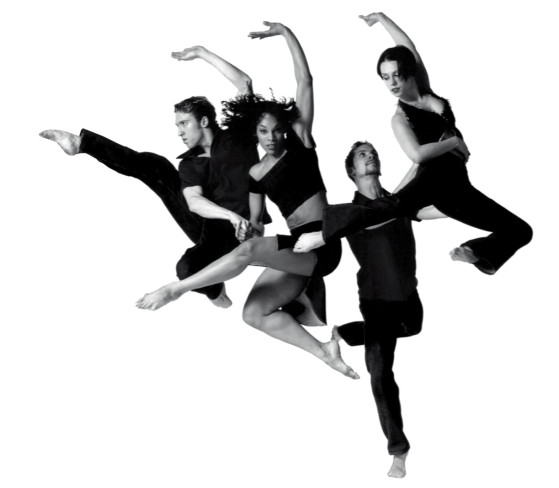

ORIGEM
No início, nas viagens dos navios negreiros da África para os EUA, os negros que não morriam de doenças eram obrigados a dançar para manterem a saúde.
As danças tradicionais dos senhores brancos eram as polcas, as valsas e as quadrilhas, e os negros os imitavam para ridicularizá-los, mas dançavam de acordo com a visão que tinham da cultura europeia, e misturando um pouco com as danças que conheciam, utilizando instrumentos de sua cultura. Dessa forma, surgiu o jazz, que era uma mistura da imitação dos ritmos europeus com os costumes naturais dos negros.

CARACTERÍSTICAS
A Dança Jazz é uma forma de expressão pessoal criada e sustentada pelo improviso, apresentando uma descendência que pode ser traçada nas suas origens africanas. Tem certas características marcantes, numa explosão de energia que irradia de todo o corpo a um ritmo pulsante.
A dança Jazz comporta um misto de movimentos e estilos. Isto é reflexo da sua origem e das influências que obteve ao longo do tempo. As suas principais vertentes são: Jazz Musical, Jazz Dance ou tradicional, Street Jazz Dance ou Urban Jazz, Heels Dance, jazz moderno, Jazz Lírico e Jazz Contemporâneo.

NOMES BRASILEIROS
Entre os principais nomes do Jazz no Brasil, destacam-se Vilma Vermon, Débora Bastos, Marly Tavares, Rose Calheiros, Caio Nunes, Fernanda Bath Chamma, Erika Navachi, Oswald Berry, Roseli Rodrigues, Carlota Portella, Alexandre Magno, Cristina Cará, Ana Araújo, Jhean Allex, Edy Wilson, Regina Dragone e outros.